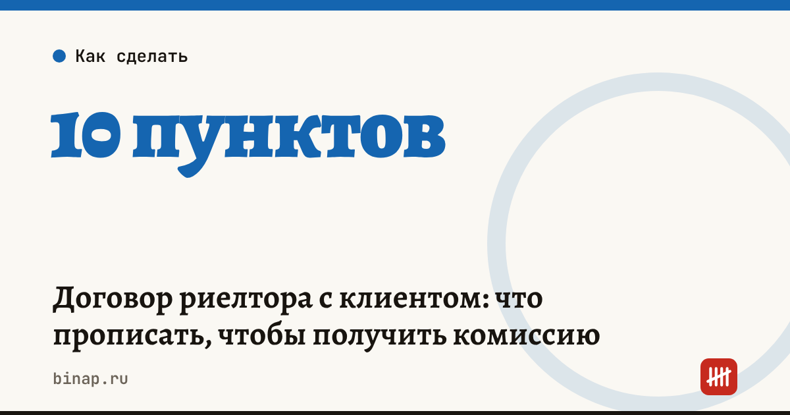

Договор риелтора с клиентом: что прописать, чтобы получить комиссию

Чаще всего агентство недвижимости теряет комиссию из-за размытого предмета договора: клиент находит покупателя через ваш показ, а платить отказывается, потому что в договоре не сказано, за что именно он платит. Договор с клиентом должен отвечать на три вопроса: какая услуга, когда она считается оказанной и что будет, если клиент заключит сделку в обход агентства.
Коротко
- Договор с клиентом — обычно договор возмездного оказания услуг (глава 39 ГК РФ). Клиент вправе отказаться от него в любой момент, оплатив фактически понесённые расходы (ст. 782 ГК РФ), поэтому важно фиксировать, что уже сделано.
- Пропишите, какой результат считается оказанной услугой: показ, подбор покупателя, сопровождение сделки.
- Ведите акты показов с подписью клиента — это главное доказательство в споре.
- Условие об эксклюзиве и о сделке «в обход» сформулируйте конкретно и проверьте у юриста.
Сроки, изменения и разборы для ИП и самозанятых — каждое утро в Telegram и MAX. Подпишитесь, чтобы не пропустить.
10 пунктов договора, которые нужно проверить
| № | Пункт | Что в нём должно быть |
|---|---|---|
| 1 | Стороны | ИП или ООО агентства, данные клиента, данные собственника, если клиент — не собственник |
| 2 | Предмет | конкретный объект или параметры поиска, перечень услуг |
| 3 | Момент оказания услуги | например, подписание предварительного или основного договора с найденным вами покупателем |
| 4 | Размер вознаграждения | фиксированная сумма или процент от цены, от какой цены (в договоре купли-продажи) |
| 5 | Срок оплаты | когда и в какой форме, на расчётный счёт агентства |
| 6 | Акты показов | кто подписывает, в какой форме (бумага, электронная подпись, мессенджер с подтверждением) |
| 7 | Сделка в обход агентства | что происходит, если клиент заключает сделку с покупателем, которого показали вы |
| 8 | Эксклюзив | есть ли он, на какой срок, что запрещено клиенту |
| 9 | Расходы при отказе | какие расходы агентства клиент оплачивает при досрочном отказе и как они подтверждаются |
| 10 | Срок договора и порядок расторжения | дата окончания, уведомление о расторжении |
Частые ошибки
- В предмете написано «содействие в продаже». Непонятно, что именно вы сделали. Лучше: перечень действий и результат.
- Комиссия «по факту сделки» без определения факта. Пропишите, какой документ считается сделкой: задаток, предварительный договор, регистрация перехода права.
- Нет актов показов. Без них сложно доказать, что покупатель пришёл от вас.
- Деньги на личную карту риелтора. Это вопросы налоговой и банка. Вознаграждение платится на счёт агентства, а риелтор получает свою часть по договору с агентством.
Клиенты, объекты, показы и сроки договоров удобно вести в CRM — тогда акт показа и напоминание о сроке не потеряются: ссылка
Проверить договор с помощью нейросети можно по готовой инструкции — ИИ-агент «Проверка договора». Как проверить вторую сторону сделки — как проверить контрагента. Как посчитать, сколько стоит один клиент из рекламы, — CAC, LTV и ROMI. Все шаги — в разделе «Агентствам недвижимости».
Частые вопросы
Можно ли взять комиссию, если клиент отказался от договора? Можно требовать оплату фактически понесённых расходов: показы, реклама объекта, подготовка документов. Поэтому их надо фиксировать и подтверждать.
Нужен ли эксклюзивный договор? Не обязательно, но он снижает риск, что объект продаст другое агентство, а вы останетесь без оплаты. Срок эксклюзива лучше ограничить: так клиенту проще согласиться.
Кто подписывает договор, если квартира в общей собственности? Все собственники или их представитель по доверенности. Иначе договор может не связывать тех, кто его не подписал.